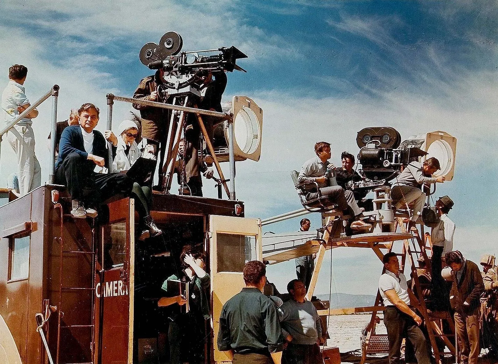

Les frères Lumière released the first projection with the Cinematograph, in Paris on 28 December 1895. The French film industry in the late 19th century and early 20th century was the world's most important. Auguste and Louis Lumière invented the cinématographe and their L'Arrivée d'un train en gare de La Ciotat in Paris in 1895 is considered by many historians as the official birth of cinematography. The first feature film to be made was the 1906 Australian silent The Story of the Kelly Gang, an account of the notorious gang led by Ned Kelly that was directed and produced by the Melburnians Dan Barry and Charles Tait. It ran, continuously, for eighty minutes.
In the early 1910s, the film industry had fully emerged with D.W. Griffith's The Birth of a Nation. Also in the early 1900s motion picture production companies from New York and New Jersey started moving to California because of the good weather and longer days. Although electric lights existed at that time, none were powerful enough to adequately expose film; the best source of illumination for movie production was natural sunlight. Besides the moderate, dry climate, they were also drawn to the state because of its open spaces and wide variety of natural scenery.
